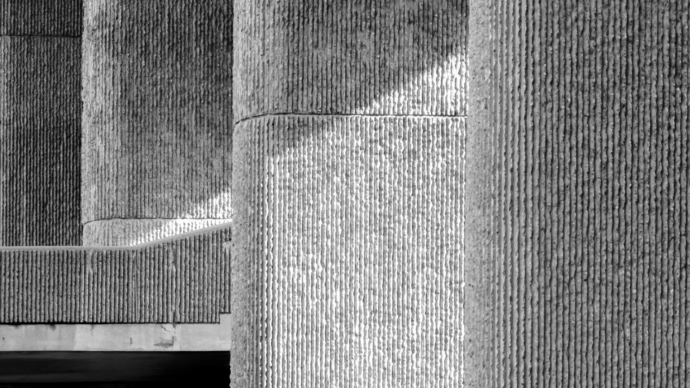
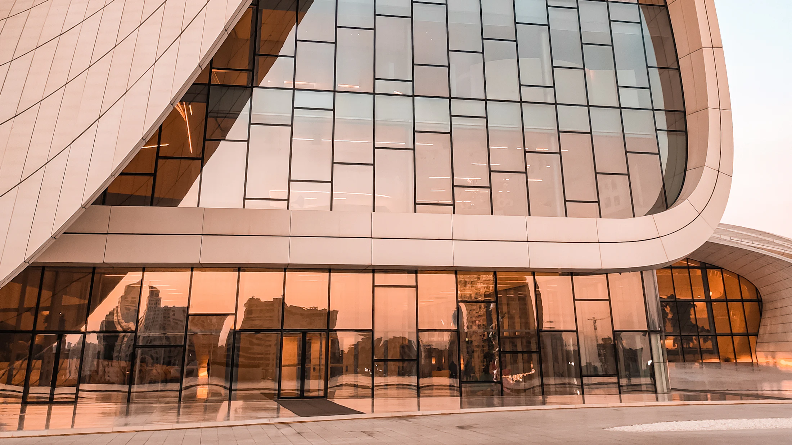
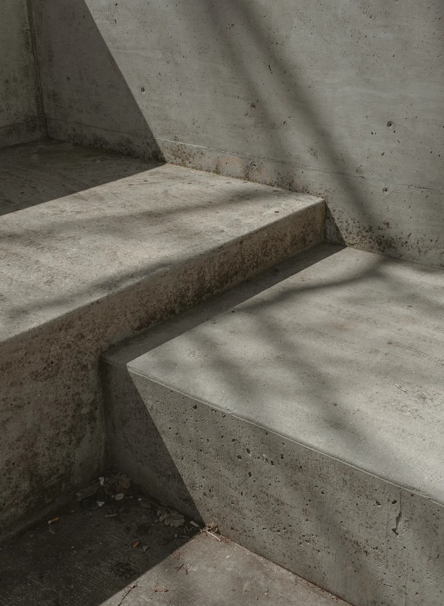
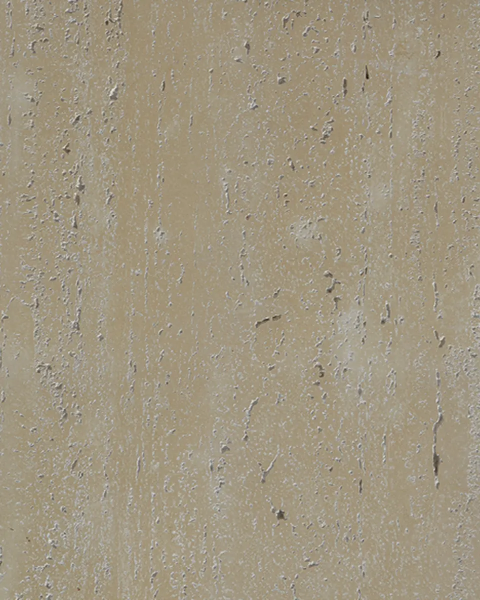
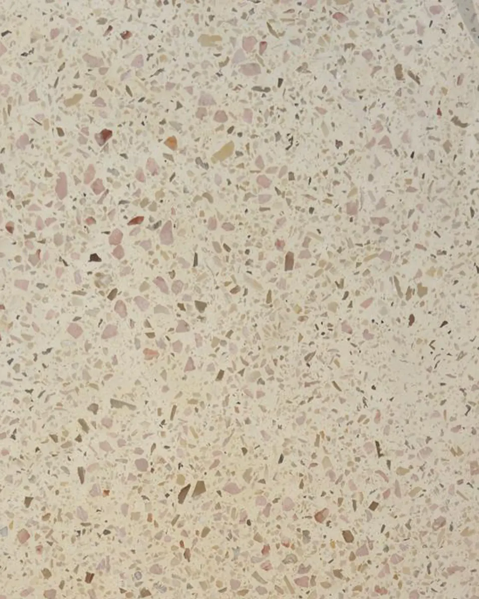
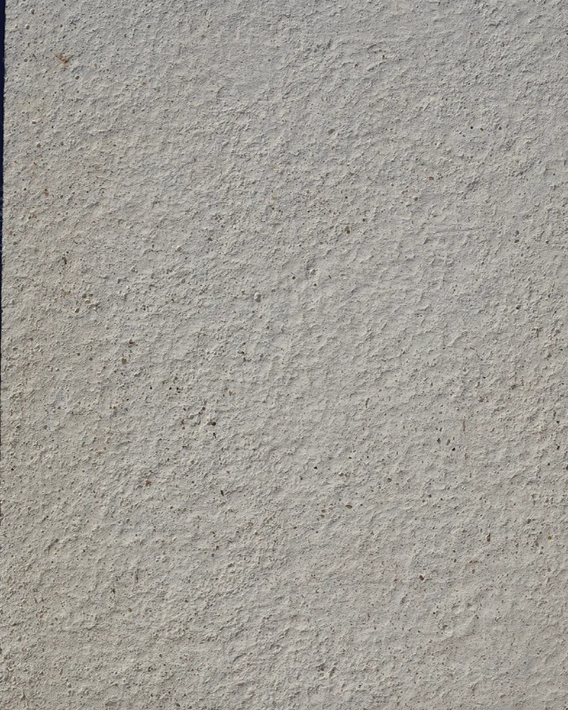
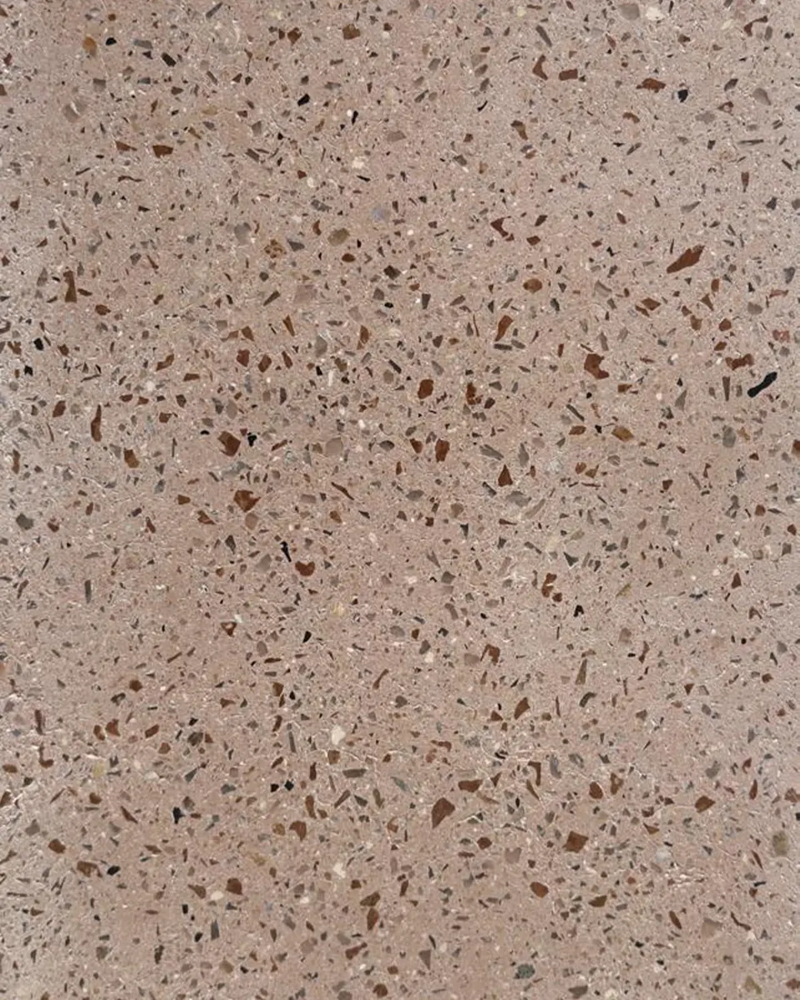
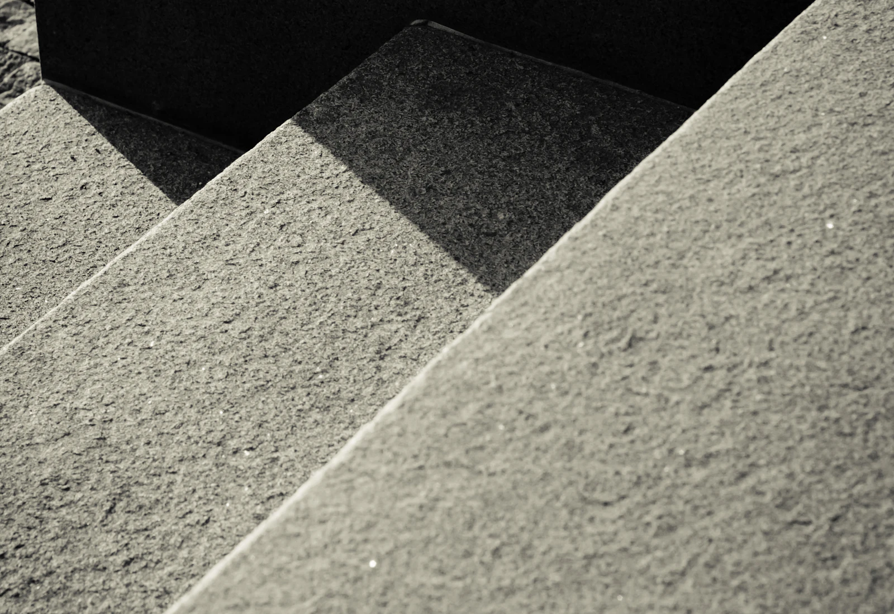

MarmoFiber Architectural Surfaces
Marble, Re-Engineered.
The mineral character of marble transformed through fiber engineering into an adaptable architectural surface for modern façades and interiors.
MarmoFiber Architectural Surfaces
The mineral character of marble transformed through fiber engineering into an adaptable architectural surface for modern façades and interiors.
Architectural Freedom
From refined wall cladding to dimensional features and custom architectural forms, MarmoFiber gives ideas more room to become architecture.

The Experience Behind the Material
Developed from Deko Egypt's architectural production experience since 1995.

Surface Collections
Marble, mineral stone, concrete, sandstone, and earth-inspired finishes developed for different architectural identities.
Architectural Elegance, Reimagined

Marble has shaped architecture for centuries. Its movement, texture, and permanence have made it a symbol of refinement across cultures and generations.
MarmoFiber carries that material language into modern architecture.
By bringing together marble-inspired mineral character and fiber-reinforced manufacturing, MarmoFiber creates surfaces that feel timeless while responding to contemporary design, production, and installation requirements.
Marble-inspired tone, movement and depth across every collection.
Fiber reinforcement carries the surface across larger architectural spans.
Moulded elements and dimensional features beyond the flat panel.
Material Principles
We rethink familiar architectural materials through engineering, experimentation, and advanced production methods.
Every surface, detail, and component is developed with attention to consistency, performance, and craftsmanship.
MarmoFiber gives architecture depth, proportion, texture, and a refined material presence.
From façades to interiors and from flat panels to customized architectural forms, MarmoFiber adapts to different design languages.
A surface should do more than cover architecture. It should become part of its identity.
Surface Collections

Movement, softness and visual depth drawn from natural marble.

Textural surfaces influenced by limestone and weathered rock.

Controlled concrete and fine-grain finishes for contemporary work.

Warm mineral colours inspired by clay, soil, cocoa and terracotta.
The Experience Behind the Material
MarmoFiber was developed from the architectural and manufacturing experience of Deko Egypt.
Since 1995, Deko Egypt has worked across contracting, GRC and GFRC production, custom mould development, architectural detailing, finishing, logistics, and installation.
That experience gives MarmoFiber more than a compelling appearance. It gives the brand a practical understanding of how architectural materials are designed, manufactured, coordinated, delivered, and installed within real projects.

Deko Egypt foundedContracting and architectural production begin.
GRC & GFRC capabilityMould development, façade elements and architectural detailing.
Finishing & installationCoordination across consultants, contractors and site teams.
MarmoFiberAn independent surface brand with an established manufacturing foundation.
Chairman
“We did not want to introduce another decorative surface. We wanted to create a material architects could recognize, specify, and build with — a material with its own identity and its own possibilities.”
Marwan Younis — Chairman
Selected Projects
01 / 05
Material Sampling
Request a MarmoFiber sample and experience the finish, texture, tonal depth, and material character before making your project selection.